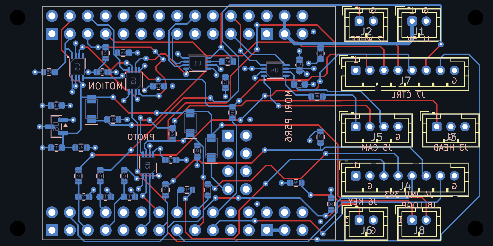
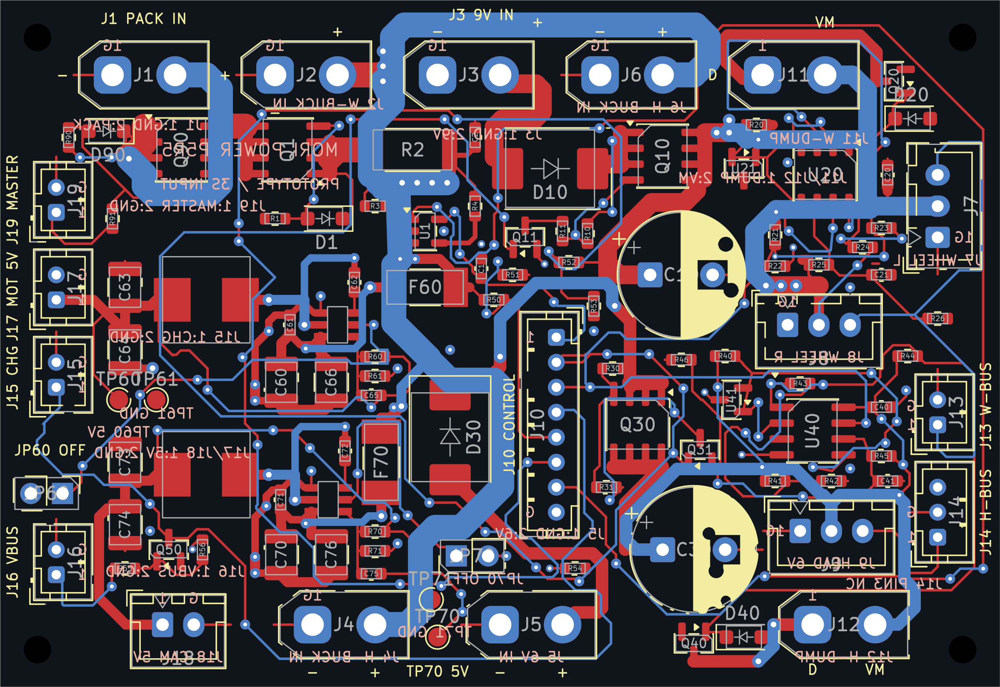
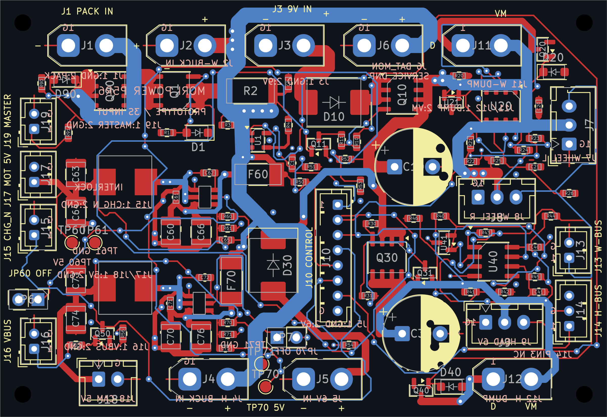
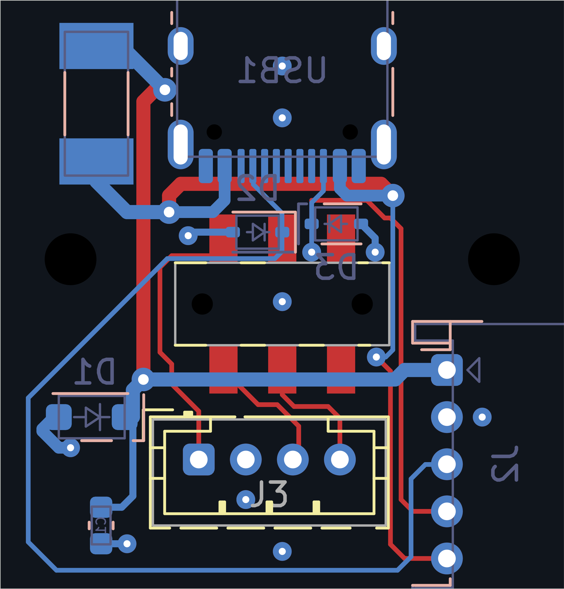
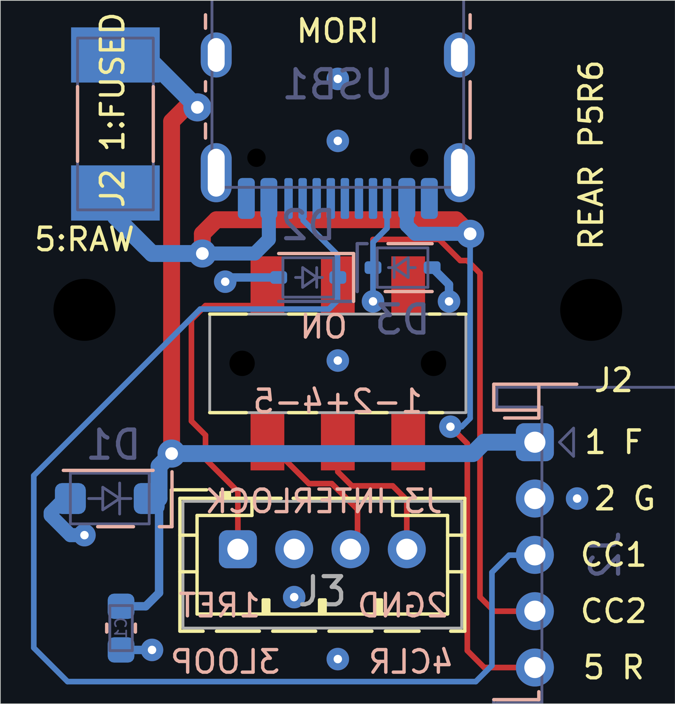

点击图可查看可缩放原生SVG。走线图临时省略铺铜；地铜图来自实际保存填充。只有背面丝印视图按背面阅读镜像，其他视图保持统一PCB坐标。Fab/编辑器网名不算实际印刷。





诊断图配合原生DRC、本体/转角/载流路径检查使用；不单凭几何提示豁免规则。
| 板 | 网络 | 平面线长 mm | 说明 |
|---|---|---|---|
| motion | /+3V3 | 39.27 → 39.27 | 铜线/过孔几何不变；仅焊盘或实际标识修正。 |
| motion | /+5V_MOTION | 24.76 → 24.76 | 铜线/过孔几何不变；仅焊盘或实际标识修正。 |
| motion | /ARM_CLK | 7.27 → 7.27 | 铜线/过孔几何不变；仅焊盘或实际标识修正。 |
| motion | /ARM_FEEDBACK | 14.78 → 14.78 | 铜线/过孔几何不变；仅焊盘或实际标识修正。 |
| motion | /ARM_Q | 51.07 → 51.07 | 铜线/过孔几何不变；仅焊盘或实际标识修正。 |
| motion | /ARM_Q_N | 18.17 → 18.17 | 铜线/过孔几何不变；仅焊盘或实际标识修正。 |
| motion | /BAT_ADC | 7.44 → 7.44 | 铜线/过孔几何不变；仅焊盘或实际标识修正。 |
| motion | /BAT_ADC_IN | 57.05 → 57.05 | 铜线/过孔几何不变；仅焊盘或实际标识修正。 |
| motion | /CAM_3V3 | 18.89 → 18.89 | 铜线/过孔几何不变；仅焊盘或实际标识修正。 |
| motion | /CAM_RX | 8.88 → 8.88 | 铜线/过孔几何不变；仅焊盘或实际标识修正。 |
| motion | /CAM_RX_BUF | 6.03 → 6.03 | 铜线/过孔几何不变；仅焊盘或实际标识修正。 |
| motion | /CAM_TX | 20.76 → 20.76 | 铜线/过孔几何不变；仅焊盘或实际标识修正。 |
| motion | /CHG_N | 67.90 → 67.90 | 铜线/过孔几何不变；仅焊盘或实际标识修正。 |
| motion | /CLR_N | 90.06 → 90.06 | 铜线/过孔几何不变；仅焊盘或实际标识修正。 |
| motion | /CURRENT_ADC | 7.84 → 7.84 | 铜线/过孔几何不变；仅焊盘或实际标识修正。 |
| motion | /CURRENT_ADC_IN | 86.86 → 86.86 | 铜线/过孔几何不变；仅焊盘或实际标识修正。 |
| motion | /FAULT_N | 66.71 → 66.71 | 铜线/过孔几何不变；仅焊盘或实际标识修正。 |
| motion | /GND | 25.74 → 25.74 | 铜线/过孔几何不变；仅焊盘或实际标识修正。 |
| motion | /HEAD_BUS | 52.90 → 52.90 | 铜线/过孔几何不变；仅焊盘或实际标识修正。 |
| motion | /HEAD_OE_N | 15.66 → 15.66 | 铜线/过孔几何不变；仅焊盘或实际标识修正。 |
| motion | /HEAD_OE_REQ_N | 11.49 → 11.49 | 铜线/过孔几何不变；仅焊盘或实际标识修正。 |
| motion | /HEAD_RX | 6.33 → 6.33 | 铜线/过孔几何不变；仅焊盘或实际标识修正。 |
| motion | /HEAD_TX | 8.18 → 8.18 | 铜线/过孔几何不变；仅焊盘或实际标识修正。 |
| motion | /HEAD_TX_BUF | 5.47 → 5.47 | 铜线/过孔几何不变；仅焊盘或实际标识修正。 |
| motion | /IMU_CS | 43.21 → 43.21 | 铜线/过孔几何不变；仅焊盘或实际标识修正。 |
| motion | /IMU_CS_M | 5.52 → 5.52 | 铜线/过孔几何不变；仅焊盘或实际标识修正。 |
| motion | /IMU_DRDY | 39.99 → 39.99 | 铜线/过孔几何不变；仅焊盘或实际标识修正。 |
| motion | /IMU_MISO | 39.94 → 39.94 | 铜线/过孔几何不变；仅焊盘或实际标识修正。 |
| motion | /IMU_MOSI | 33.65 → 33.65 | 铜线/过孔几何不变；仅焊盘或实际标识修正。 |
| motion | /IMU_MOSI_M | 3.12 → 3.12 | 铜线/过孔几何不变；仅焊盘或实际标识修正。 |
| motion | /IMU_SCK | 43.61 → 43.61 | 铜线/过孔几何不变；仅焊盘或实际标识修正。 |
| motion | /IMU_SCK_M | 3.66 → 3.66 | 铜线/过孔几何不变；仅焊盘或实际标识修正。 |
| motion | /LINK_RX | 9.68 → 9.68 | 铜线/过孔几何不变；仅焊盘或实际标识修正。 |
| motion | /LINK_TX | 10.12 → 10.12 | 铜线/过孔几何不变；仅焊盘或实际标识修正。 |
| motion | /LOOP_3V3 | 18.83 → 18.83 | 铜线/过孔几何不变；仅焊盘或实际标识修正。 |
| motion | /NRST | 4.96 → 4.96 | 铜线/过孔几何不变；仅焊盘或实际标识修正。 |
| motion | /S288_BUS | 31.45 → 31.45 | 铜线/过孔几何不变；仅焊盘或实际标识修正。 |
| motion | /S288_OE_N | 10.80 → 10.80 | 铜线/过孔几何不变；仅焊盘或实际标识修正。 |
| motion | /S288_OE_REQ_N | 23.71 → 23.71 | 铜线/过孔几何不变；仅焊盘或实际标识修正。 |
| motion | /S288_RX | 6.22 → 6.22 | 铜线/过孔几何不变；仅焊盘或实际标识修正。 |
| motion | /S288_TX | 11.68 → 11.68 | 铜线/过孔几何不变；仅焊盘或实际标识修正。 |
| motion | /S288_TX_BUF | 1.93 → 1.93 | 铜线/过孔几何不变；仅焊盘或实际标识修正。 |
| motion | /USER_KEY_N | 51.66 → 51.66 | 铜线/过孔几何不变；仅焊盘或实际标识修正。 |
| motion | /WHEEL_ADC | 5.22 → 5.22 | 铜线/过孔几何不变；仅焊盘或实际标识修正。 |
| motion | /WHEEL_ADC_IN | 78.24 → 78.24 | 铜线/过孔几何不变；仅焊盘或实际标识修正。 |
| power | /+3V3 | 20.52 → 20.52 | 铜线保留；与源版逐线比较。 |
| power | /+5V_CAM | 62.14 → 62.14 | 铜线保留；与源版逐线比较。 |
| power | /+5V_MOTION | 51.44 → 51.44 | 铜线保留；与源版逐线比较。 |
| power | /ARM_Q | 133.64 → 133.64 | 铜线保留；与源版逐线比较。 |
| power | /BAT_ADC | 21.75 → 21.75 | 铜线保留；与源版逐线比较。 |
| power | /BAT_IN | 9.37 → 9.37 | 铜线保留；与源版逐线比较。 |
| power | /BAT_MON | 125.50 → 125.50 | 铜线保留；与源版逐线比较。 |
| power | /BAT_REV | 14.87 → 14.87 | 铜线保留；与源版逐线比较。 |
| power | /C5_BOOT | 2.17 → 2.45 | C72横放，BOOT线从焊盘内有效接触点直出。 |
| power | /C5_EN | 22.97 → 22.97 | 铜线保留；与源版逐线比较。 |
| power | /C5_FB | 6.86 → 6.86 | 铜线保留；与源版逐线比较。 |
| power | /C5_SW | 16.41 → 15.25 | 两端主路径双孔；bootstrap支路缩短。 |
| power | /C5_VIN | 17.13 → 17.13 | 铜线保留；与源版逐线比较。 |
| power | /CHG_BASE | 6.36 → 6.36 | 铜线保留；与源版逐线比较。 |
| power | /CHG_N | 87.67 → 87.67 | 铜线保留；与源版逐线比较。 |
| power | /CURRENT_ADC | 145.80 → 145.80 | 铜线保留；与源版逐线比较。 |
| power | /FAULT_N | 68.00 → 68.00 | 铜线保留；与源版逐线比较。 |
| power | /GND | 130.48 → 130.48 | 铜线保留；与源版逐线比较。 |
| power | /H6_IN | 19.70 → 19.70 | 铜线保留；与源版逐线比较。 |
| power | /H_BRAKE_GATE | 63.25 → 63.25 | 铜线保留；与源版逐线比较。 |
| power | /H_BUS | 11.34 → 11.34 | 铜线保留；与源版逐线比较。 |
| power | /H_DUMP_D | 11.76 → 11.76 | 铜线保留；与源版逐线比较。 |
| power | /H_GATE | 10.07 → 10.07 | 铜线保留；与源版逐线比较。 |
| power | /H_GATE_LOW | 20.32 → 20.32 | 铜线保留；与源版逐线比较。 |
| power | /H_OVSENSE | 30.14 → 30.14 | 铜线保留；与源版逐线比较。 |
| power | /H_PRE | 29.74 → 29.74 | 铜线保留；与源版逐线比较。 |
| power | /H_REF | 36.59 → 36.59 | 铜线保留；与源版逐线比较。 |
| power | /H_SENSE | 27.19 → 27.19 | 铜线保留；与源版逐线比较。 |
| power | /H_VM | 87.60 → 87.60 | 铜线保留；与源版逐线比较。 |
| power | /KELVIN_N | 4.69 → 4.69 | 铜线保留；与源版逐线比较。 |
| power | /KELVIN_P | 4.18 → 4.18 | 铜线保留；与源版逐线比较。 |
| power | /M5_BOOT | 1.68 → 2.25 | C62横放，检查BOOT与SW完整两端。 |
| power | /M5_EN | 37.00 → 37.16 | 消除原R60旁两个自由直角，保留反馈回路。 |
| power | /M5_FB | 6.28 → 6.28 | 铜线保留；与源版逐线比较。 |
| power | /M5_SW | 16.66 → 15.27 | 两端主路径双孔；bootstrap支路缩短。 |
| power | /M5_VIN | 19.81 → 19.81 | 铜线保留；与源版逐线比较。 |
| power | /MASTER_GATE | 12.84 → 12.84 | 铜线保留；与源版逐线比较。 |
| power | /MASTER_RETURN | 6.51 → 6.51 | 铜线保留；与源版逐线比较。 |
| power | /PACK_FUSED | 31.03 → 31.03 | 铜线保留；与源版逐线比较。 |
| power | /REV_GATE | 11.81 → 11.81 | 铜线保留；与源版逐线比较。 |
| power | /VBUS_CHARGE | 8.51 → 8.51 | 铜线保留；与源版逐线比较。 |
| power | /W9_IN | 11.39 → 11.39 | 铜线保留；与源版逐线比较。 |
| power | /WHEEL_ADC | 128.68 → 128.68 | 铜线保留；与源版逐线比较。 |
| power | /W_BRAKE_GATE | 21.37 → 21.37 | 铜线保留；与源版逐线比较。 |
| power | /W_BUS | 46.55 → 46.55 | 铜线保留；与源版逐线比较。 |
| power | /W_DUMP_D | 20.29 → 20.29 | 铜线保留；与源版逐线比较。 |
| power | /W_GATE | 8.08 → 8.08 | 铜线保留；与源版逐线比较。 |
| power | /W_GATE_LOW | 3.22 → 3.22 | 铜线保留；与源版逐线比较。 |
| power | /W_OVSENSE | 14.19 → 14.19 | 铜线保留；与源版逐线比较。 |
| power | /W_PRE | 13.30 → 13.30 | 铜线保留；与源版逐线比较。 |
| power | /W_REF | 20.05 → 20.05 | 铜线保留；与源版逐线比较。 |
| power | /W_SENSE | 54.04 → 54.04 | 铜线保留；与源版逐线比较。 |
| power | /W_VM | 96.00 → 96.00 | 铜线保留；与源版逐线比较。 |
| rear | /CC1 | 45.73 → 45.73 | 铜线/过孔几何不变；仅焊盘或实际标识修正。 |
| rear | /CC2 | 24.02 → 24.02 | 铜线/过孔几何不变；仅焊盘或实际标识修正。 |
| rear | /CLR_N | 5.66 → 5.66 | 铜线/过孔几何不变；仅焊盘或实际标识修正。 |
| rear | /GND | 7.01 → 7.01 | 铜线/过孔几何不变；仅焊盘或实际标识修正。 |
| rear | /LOOP_3V3 | 5.34 → 5.34 | 铜线/过孔几何不变；仅焊盘或实际标识修正。 |
| rear | /MASTER_RETURN | 11.74 → 11.74 | 铜线/过孔几何不变；仅焊盘或实际标识修正。 |
| rear | /VBUS_FUSED | 36.70 → 36.70 | 铜线/过孔几何不变；仅焊盘或实际标识修正。 |
| rear | /VBUS_RAW | 39.83 → 39.83 | 铜线/过孔几何不变；仅焊盘或实际标识修正。 |